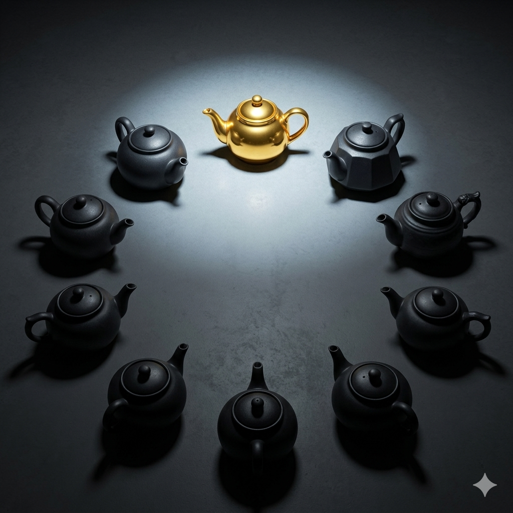
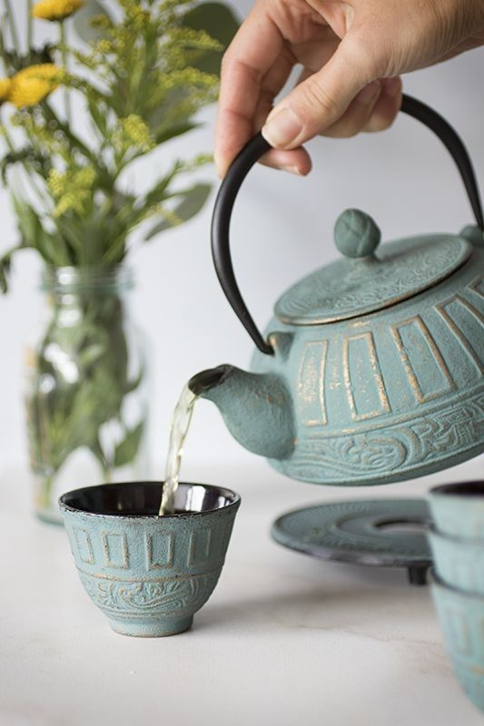
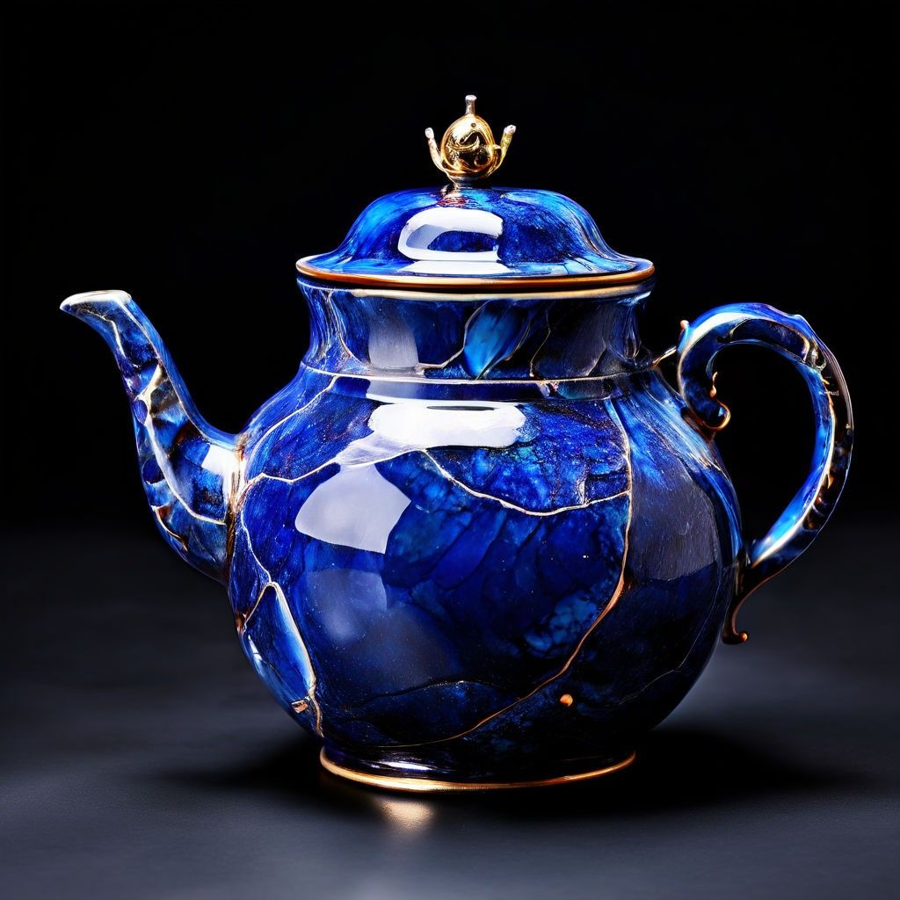

We provide context for your mental health patterns, not just numbers.
A visual journey through emotional states using intuitive color mapping.
Connect physiological habits to psychological well-being.
Most mental health apps are black boxes. They tell you that you are stressed, but they don't tell you why. i_am_a_teapot uses a logic-based engine to bridge that gap.
Inspired by technical contribution graphs, our dashboard translates the complexity of your mind into a clear visual story.
Select a specialized assessment to begin your data-driven mending process.
Your mental state isn't a diagnosis; it's a profile of how you handle the heat.
Psychological Profile: Masking & Social Perfectionism.
You look pristine on the shelf. You are here to impress, to be flawless, and to meet everyone’s expectations. But inside, you feel empty because you are never used for your true purpose.

Psychological Profile: Functional Burnout & Hyper-Utility.
You are stained by tea and heat. You serve everyone—work, family, friends—until you are dry. Your handle is wearing thin from the weight of others' needs.
Psychological Profile: Fragmentation & Acute Distress.
The pressure became too much. You feel scattered in pieces, unable to hold warmth or water. You feel "unfixable" and disconnected from your identity.

Psychological Profile: Post-Traumatic Growth & Resilience.
You were broken once, but you’ve mended your cracks with gold. You are stronger at the repair points than you were before the break.